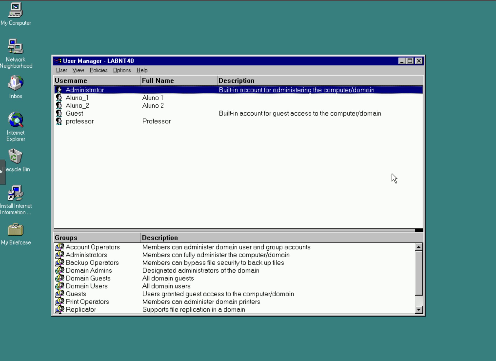
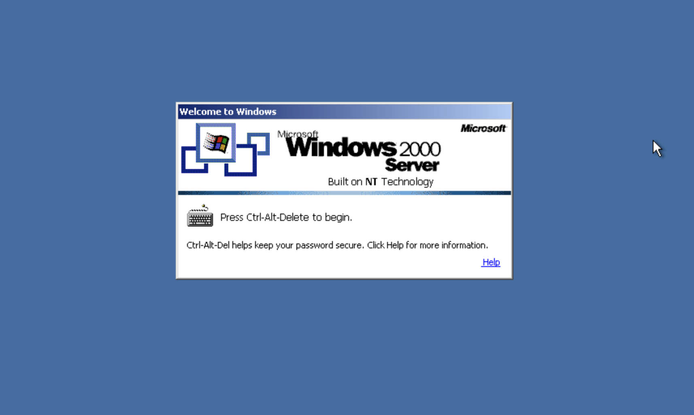
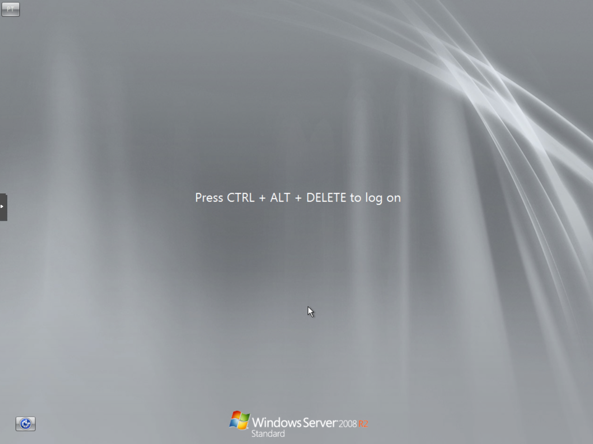
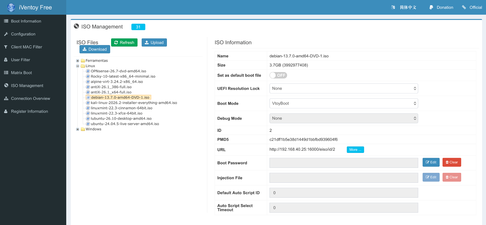

Projetos de experimentação
Laboratório retro
Testes com Windows NT, Windows 2000 e redes isoladas.
Explorar →Arranque pela rede
Instalações e recuperação de sistemas com PXE / iVentoy.
Explorar →Eletrónica experimental
ESP32, DSP, displays redondos e áudio digital.
Explorar →Energia e UPS
Continuidade de alimentação e monitorização de UPS.
Explorar →Laboratório retro — Windows NT 4.0
Nem todas as experiências precisam de começar com o sistema operativo mais recente. Uma das partes mais interessantes deste laboratório é recuperar versões que marcaram uma época e fazê-las arrancar novamente num ambiente de virtualização atual. O Windows NT 4.0 é um bom exemplo: tem uma interface familiar para quem utilizou computadores nos anos 90, mas foi criado para máquinas e periféricos muito diferentes dos atuais.


Quando o driver vinha numa disquete
Instalar o sistema operativo foi apenas parte do trabalho. Para colocar a rede a funcionar, foi necessário procurar um controlador compatível com o hardware virtual apresentado à VM. E aqui surgiu uma pequena viagem no tempo: o Windows NT não tinha os mecanismos de deteção e instalação automática de drivers a que estamos habituados hoje.
A solução passou por preparar uma imagem de disquete virtual com o driver, associá-la à máquina virtual através do Proxmox e indicar ao Windows NT onde procurar o controlador. Era uma forma de simular, com ferramentas atuais, o processo que se fazia com disquetes físicas. Assim, o sistema antigo pôde obter os ficheiros de instalação sem depender de uma drive real.
Uma dificuldade que se transforma em aprendizagem
- Escolher o hardware virtual: um sistema antigo pode reconhecer apenas certos modelos de placas e controladores.
- Encontrar o driver adequado: a compatibilidade depende do sistema operativo e do dispositivo emulado.
- Criar o suporte de instalação: neste caso, uma imagem de disquete carregada no Proxmox.
- Testar e guardar o resultado: depois de funcionar, um snapshot permite conservar esse ponto de partida.
Domínio LABNT40: utilizadores e autenticação
O laboratório inclui um controlador principal de domínio (PDC), um controlador de reserva (BDC) e um cliente Windows NT 4.0 Workstation. No domínio LABNT40 foram configuradas contas como Aluno_1, Aluno_2 e professor.


aluno_1 e domínio LABNT40 selecionados. A captura não mostra por si só o resultado final da autenticação.Controlador principal do domínio NT, onde se fazem as alterações à base de dados das contas.
Mantém uma cópia da base de dados e pode autenticar utilizadores se o controlador principal ficar indisponível, desde que tenha recebido as alterações necessárias.
No ensaio do laboratório foi também testado o funcionamento com um dos controladores desligado, para observar a continuidade da autenticação. O modelo PDC/BDC do NT 4.0 permite essa redundância; um BDC não se torna automaticamente um PDC gravável.
aluno_1 no domínio LABNT40. A sequência completa da autenticação durante a falha de um controlador não está demonstrada nestas duas capturas.Windows 2000 Server e Windows Server 2008 R2
O Windows 2000 Server foi instalado e teve o início de sessão testado com sucesso no laboratório. O Windows Server 2008 R2 Standard encontra-se apenas instalado, tendo arrancado até ao ecrã de início de sessão. Ainda não foram criados utilizadores, configurados serviços ou realizados os testes previstos nesse sistema.


No Windows 2000 Server, foram realizados testes de autenticação com sucesso. O Windows 2000 introduziu o Active Directory, cujo modelo de replicação difere do sistema PDC/BDC do Windows NT 4.0.
Esta experiência mostra a verdadeira vantagem de um laboratório virtual: podemos experimentar, errar, voltar atrás e repetir o procedimento sem ocupar um computador antigo nem colocar o sistema principal em risco. A virtualização facilita muito o trabalho, mas não faz desaparecer todas as limitações dos sistemas históricos — e é precisamente aí que se aprende mais.
PXE e iVentoy — arranque pela rede
O PXE (Preboot Execution Environment) permite que um computador inicie através da rede, sem precisar de arrancar primeiro a partir de um disco interno ou de uma pen USB. É especialmente útil para instalar sistemas operativos, realizar diagnósticos ou recuperar máquinas.
Mecanismo que permite iniciar um computador pela ligação de rede.
Software que disponibiliza um menu para arrancar, através da rede, sistemas e ferramentas a partir de imagens ISO compatíveis.
Ficheiro que representa uma imagem de disco, frequentemente usado para distribuir instaladores e ferramentas de recuperação.
Dois modos de firmware/arranque que podem exigir configurações diferentes no servidor e no computador cliente.
O servidor no laboratório
A interface do iVentoy Free está acessível no servidor Debian 13 da VM 300, com endereço 192.168.40.25 na VLAN 40. A captura mostra uma biblioteca com 31 imagens ISO, organizada em pastas como Linux, Windows e Ferramentas.

Para que serve na prática?
Escolher uma imagem compatível e iniciar a instalação num computador com suporte de arranque pela rede.
Aceder a ferramentas de manutenção sem preparar uma pen USB para cada utilitário.
Explorar as possibilidades e limitações de compatibilidade de sistemas históricos com métodos de arranque modernos.
Manter as imagens organizadas num único servidor, simplificando o acesso e a gestão.
Nem todas as imagens arrancaram como esperado
Durante as experiências de arranque pela rede com o iVentoy, algumas imagens de distribuições Linux que se pretendia utilizar em máquinas virtuais não arrancaram corretamente. Entre os exemplos observados estiveram o Linux Mint e o Kali Linux.
Foi tentado o arranque pela rede para utilização numa VM, mas o processo não decorreu como esperado.
Também apresentou problemas no arranque pela rede nas experiências realizadas para uma VM.
Esta experiência é útil para distinguir a disponibilidade de uma ISO no menu da compatibilidade efetiva de arranque. O resultado pode variar com a imagem, versão do sistema, firmware BIOS/UEFI, opções de arranque e configuração da rede. São hipóteses gerais de diagnóstico, não causas comprovadas destes testes.
O facto de estas imagens terem apresentado dificuldades no arranque pela rede não significa que as distribuições sejam incompatíveis com máquinas virtuais: a instalação direta por ISO e o arranque por PXE são processos diferentes.
Porque é tão útil numa empresa com muitos computadores?
Numa empresa com dezenas ou centenas de postos de trabalho, preparar cada computador com um CD, DVD ou pen USB torna-se repetitivo: é preciso transportar os suportes, atualizar as imagens e repetir o processo em cada equipamento.
Com um servidor PXE, a equipa de informática pode ligar os computadores à rede, escolher o arranque pela rede e selecionar uma imagem disponibilizada centralmente. A mesma biblioteca de sistemas operativos e ferramentas passa a estar acessível a diferentes máquinas, sem preparar um suporte físico para cada intervenção.
Deixa de ser necessário transportar e atualizar várias pens USB ou discos de instalação.
Os técnicos podem arrancar a mesma versão de instalador ou ferramenta em equipamentos compatíveis.
Facilita reinstalações, diagnósticos e recuperação de computadores em vários departamentos.
Quando a biblioteca de imagens muda, a gestão faz-se no servidor em vez de alterar individualmente cada suporte físico.
E quando é preciso replicar uma instalação já preparada?
Para criar várias máquinas com uma instalação-base semelhante — em vez de executar o instalador em cada uma — pode usar-se uma solução de captura e distribuição de imagens de disco, como o FOG Project. O FOG usa PXE/iPXE para arrancar os computadores e permite capturar uma imagem de referência e distribuí-la, incluindo por multicast.
Não confundir: o iVentoy disponibiliza o arranque de instaladores e ferramentas por ISO; o FOG centra-se na captura, reposição e gestão de imagens de máquinas. São abordagens complementares, não equivalentes.
Importante: arrancar uma ISO através de PXE não significa que a instalação fique automaticamente concluída. Para instalar muitos computadores de forma desatendida, podem ser necessários ficheiros de resposta, ferramentas de deployment, automatização, controladores e uma infraestrutura de rede preparada. A compatibilidade varia conforme os equipamentos e imagens.
Este projeto complementa o laboratório Proxmox e os testes com Windows NT e outros sistemas históricos.
Eletrónica experimental
Um espaço dedicado a protótipos com ESP32, displays TFT circulares, processamento digital de áudio e indicadores inspirados no Hi-Fi clássico. A história está contada como um diário de desenvolvimento: o que já existe, o que ainda falta testar e porque é interessante explorar cada etapa.
UPS e continuidade de serviço
Testes de comunicação com UPS, integração com sistemas de monitorização e análise de estratégias de desligamento controlado. Alguns ensaios ainda se encontram em desenvolvimento.